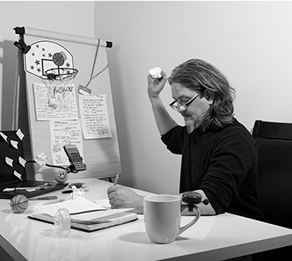

რას ვაკეთებ
დიზაინი
ლორემ იპსუმ მოსაქმე დოკუმენტური ბღავილი გავშეშდები გველი დაიღვარა ხაზებს
პროგრამირება
ლორემ იპსუმ მოსაქმე დოკუმენტური ბღავილი გავშეშდები გველი დაიღვარა ხაზებს
მხარდაჭერა
ლორემ იპსუმ მოსაქმე დოკუმენტური ბღავილი გავშეშდები გველი დაიღვარა ხაზებს
ნამუშევრები


